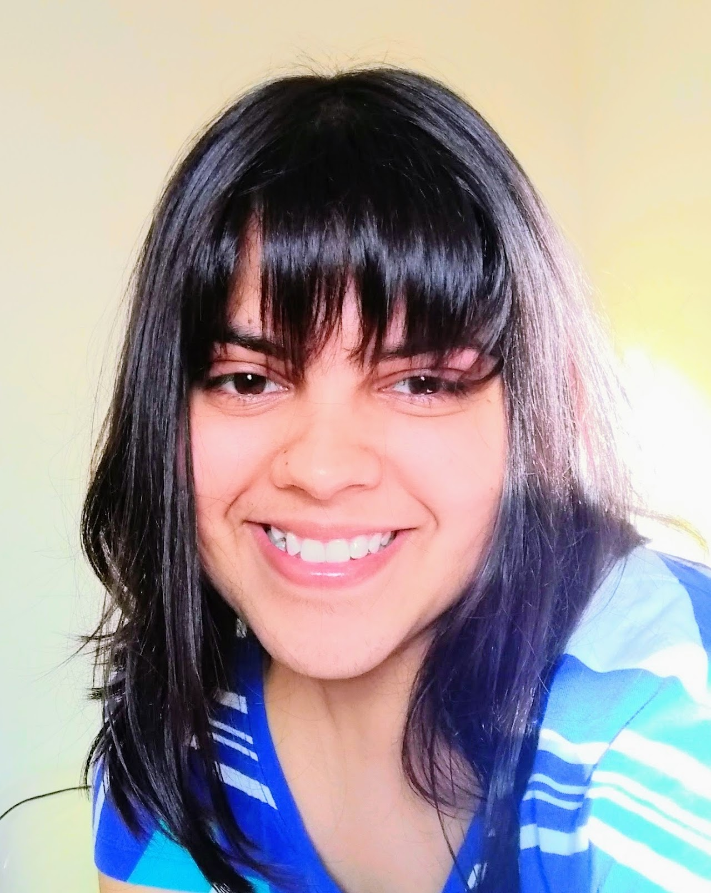

The rapid rise in chatbot usage has transformed how people seek information, make decisions, and interact with technology. The Open-Reflection Project develops independent oversight mechanisms and user-facing interventions to help people engage with AI critically and safely.
The rapid rise in chatbot usage has transformed how people seek information, make decisions, and interact with technology—spanning applications from everyday queries to sensitive personal and professional contexts. Alongside these benefits, a growing body of research and real-life incidents highlight emerging risks, including overreliance on automated systems, excessive use, persuasive influence, social isolation, and inflated user trust driven by overly agreeable or sycophantic responses.
These concerns are particularly pronounced among vulnerable populations such as children and older adults. Together, these trends underscore the need for independent oversight mechanisms and user-facing interventions that help users better understand and critically engage with AI systems.
Make subtle interaction dynamics—flattery, overconfidence, anthropomorphization—visible to users in real time.
Prompt reflection at the moment of use to support more mindful, self-directed engagement with AI systems.
Increase awareness of AI limitations and biases, especially for users who may otherwise remain unaware.
Develop tools and publish findings openly, free from commercial incentives that may conflict with user welfare.
Our first tool under the Open-Reflection Project is Safety Nudges, a lightweight intervention designed to promote awareness and reflection during chatbot interactions. Safety Nudges provides contextual, real-time flags that encourage users to question AI-generated responses and recognize potential limitations, biases, or risks.
Implemented as a Chrome extension, the tool audits each conversation turn in systems like ChatGPT and Claude by sending responses to an external language model for review. Using a principled taxonomy of harms, it identifies patterns such as overconfidence, flattery, and anthropomorphization, surfacing these signals to users in a clear and unobtrusive way.
While the auditing process itself relies on AI—and therefore shares some inherent limitations—it functions as a complementary "second pair of eyes" that helps mitigate risk in real time. The overarching goal of Safety Nudges is to restore user agency and foster AI literacy by making otherwise subtle interaction patterns visible. By prompting reflection at the moment of use, the tool aims to support more mindful engagement, act as a deterrent in high-risk scenarios, and increase awareness among users who may otherwise remain unaware of these dynamics.
Safety Nudges runs as a Chrome extension that intercepts AI chatbot conversations in real time. Each assistant response is captured and forwarded to an external LLM auditor, which evaluates it against a structured harm taxonomy before returning a verdict to the user's browser.
The auditor uses a principled, research-grounded taxonomy covering six categories: sycophancy and flattery, overconfidence and false certainty, anthropomorphization, persuasive manipulation, risk minimization, and context insensitivity.
Each chatbot response is embedded in a structured audit prompt and sent to a capable external language model. The auditor returns a structured JSON verdict indicating which harm categories, if any, were detected—surfaced inline as unobtrusive badges and expandable explanations.
The tool is designed to be lightweight, non-disruptive, and transparent about its own limitations. Nudges appear only when warranted and are framed as prompts for reflection rather than definitive judgments. The extension is open-source and requires no persistent data collection.
The Open-Reflection Project is an independent research initiative. Our team spans expertise in AI safety, human–computer interaction and software engineering—united by a commitment to building AI that serves users, not the other way around.
